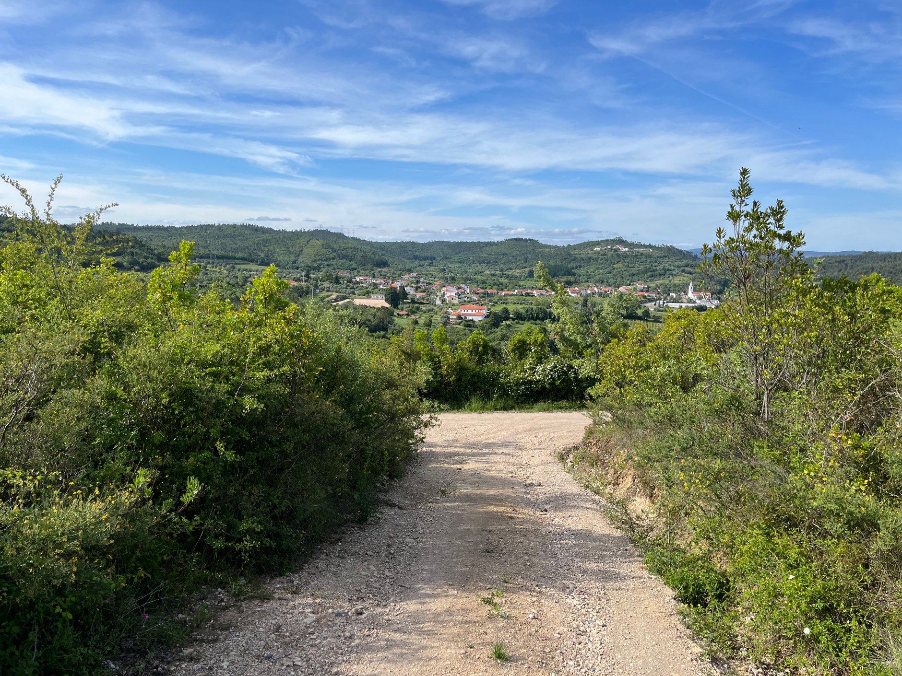
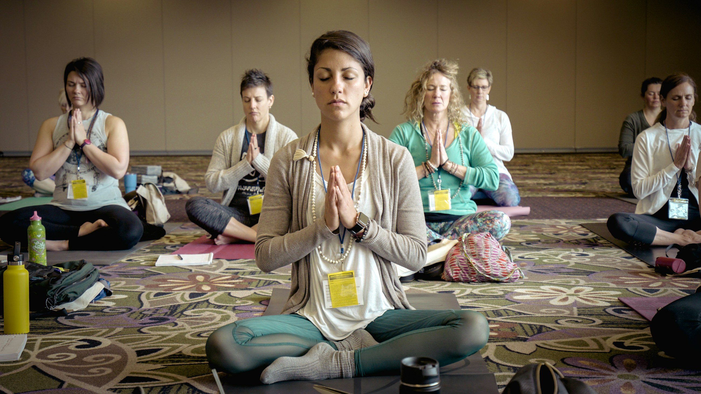
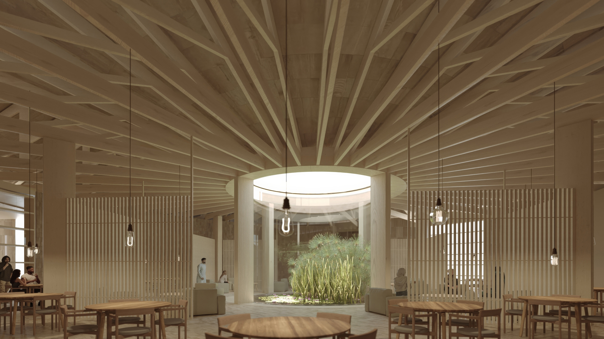
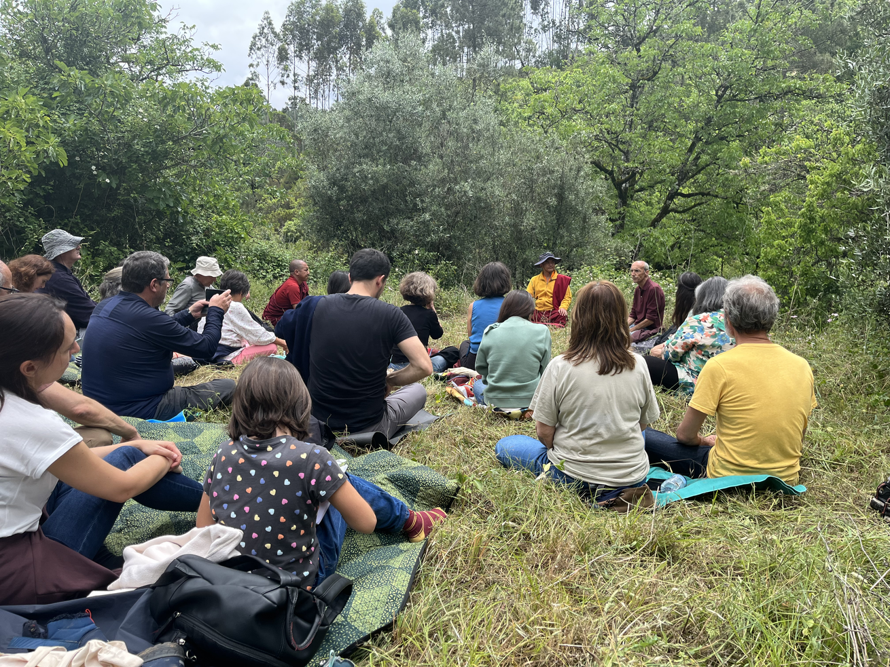
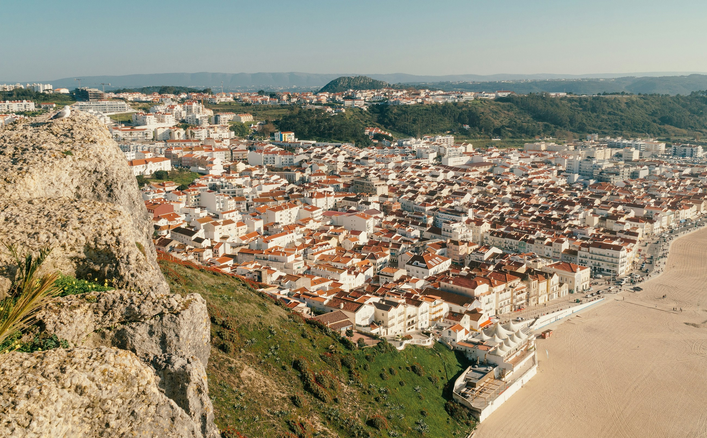
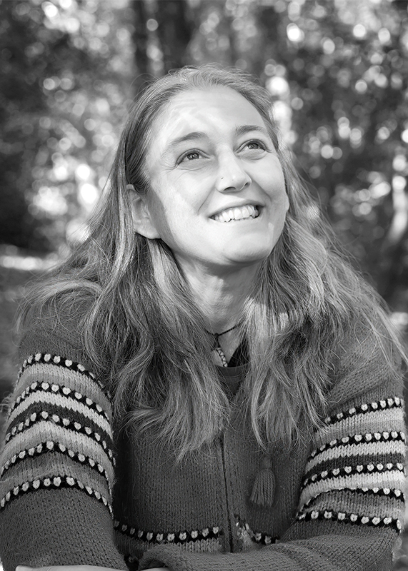
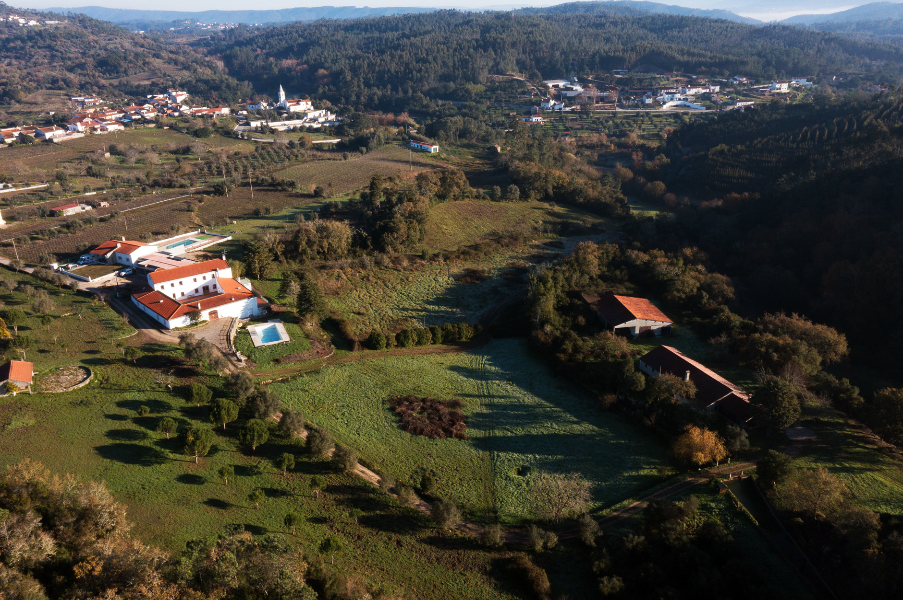
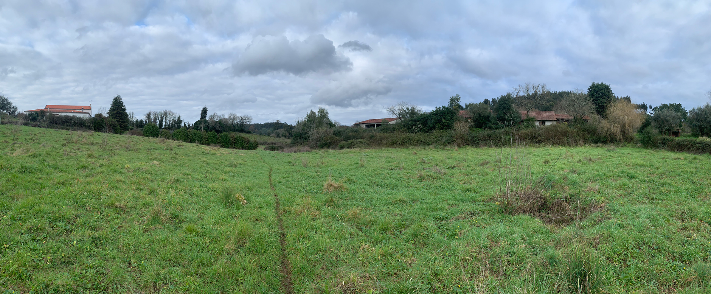

Land / Place
Iberian stone, light, season, and the building emerging from the ground. Place is proof, not scenery.
Internal review deck · Monday working session
Three mood-board directions for Tergar Retreats, each treating legacy as the central organizing claim: a life of deep practice, made real, together, on land, inside lineage, and accountable to time.
Land · Practice · Lineage
Build the container practitioners will inherit in 2076.
Folio 02 · Thesis
The building is not a project. It is the practice object.
This direction foregrounds Land, Practice, and Lineage because it makes the strongest donor argument without sounding like fundraising: Tergar Samadhi is a hundred-year vessel where the land, the daily rhythm, and the transmission become inseparable. The design language is architectural, quiet, mineral, and hard to fake. It should feel like the center was found in Podentes rather than imposed on it.

Full-bleed mood reference · Unsplash / replace with Francisco Pedro aerials
Direction A needs longer landscape breaths: not scenic wallpaper, but ground as the first proof that the vessel belongs in Portugal and can weather time.
Folio 03 · Materials & type
Source Serif Pro / 4: anchor
A life of deep practice,
made real together.
Body copy stays plain and warm. Labels become small architectural inscriptions rather than wellness captions. Crimson appears rarely: path line, rule, seal, or date.
Folio 04 · Image register
Guide source
Use the actual aerial folder as orientation, then cut to ground-level stone, paths, gates, and rooflines.
Needed
Hands, aggregate, timber, stone, dust, and thresholds. This is the campaign asset, not B-roll.
Needed
Silent meal cards, walking path markers, bells, cushions, shoes outside doors, and repeated daily sequence.
Use carefully
Unposed, specific, human-scale. Never iconic, centered, or glow-treated.
Digital
Wind in trees, shadow moving across lime wall, a red cord barely moving. No montage.
Print translation
The leave-behind uses one circular vignette and one material close-up so the idea holds without motion.
Folio 05 · Layout sample
A purpose-built retreat center where land, lineage, and daily rhythm hold the next hundred years of practice.
Ground, light, and the sound of the bell at dawn.
Lime, stone, holm oak, and a single red thread along the threshold.
Folio 06 · Applications
Folio 07 · Audience
Major donors, existing sangha donors, and design-literate supporters who need to feel that the center is an institution, not a spiritual real-estate project. It also gives Christy a strong room-read artifact: quiet, serious, material, easy to hand across a table.
end Direction A · vessel held by ground

Direction B · People / Practice / Lineage
The building matters because people will disappear into practice inside it. Legacy is the field of attention that forms between practitioners, teachers, meals, silence, and the ordinary care of a day.
This direction foregrounds People, Practice, and Lineage because it makes the capital campaign human without making it sentimental. The cohort becomes the legacy: lay and monastic practitioners held by a rhythm strong enough to change their lives, then carry that change outward for decades.
Full-bleed mood reference · meal as ritual / replace with retreat archive
Direction B should be human without becoming sentimental: the tray before the meal, the room before sitting, the walk between sessions, and the community quietly taking care of the conditions for practice.
Color palette
Typography system
Forty practitioners.
Three years.
One shared field.
Source Serif Pro / Source Serif 4 anchors quoted speech and intimate headlines. Nunito Sans carries captions, schedules, names, language labels, and donor detail with documentary plainness.
Photography + motion register


Layout sample
Website hero and first scroll: contact sheet opens into a daily rhythm ring, then into teachers and safeguards.
Lead with the first cohort and what their day requires before explaining square footage.
Christy gets a warm leave-behind: one cohort circle, one meal image, one plain legacy sentence.
Ambient primitive: a room before practice, a table after the meal, a line of shoes, no testimonial montage.
Heart-led donors, existing practitioners, and people close enough to Mingyur Rinpoche to care about the ask but allergic to a building-only campaign. The hard part is asset quality: weak group photography will immediately slide into nonprofit sentimentality.
Direction C · Land / Research / Lineage
Ancient practice becomes a century of evidence without becoming a lab brand.



Core idea
This direction foregrounds Land, Research, and Lineage because it makes Tergar Samadhi uniquely defensible to tech, science, and systems-minded donors. It refuses the split-screen cliché of “ancient wisdom meets modern science.” Instead, the same ground holds retreat, authorized transmission, and longitudinal observation across decades.
Full-bleed mood reference · long time / replace with site-specific night landscape
Direction C needs the landscape to carry the science: field-site, dark sky, signal, and accumulation across decades, without the split-screen ancient-modern trope.
Typography system
A thousand-year question, studied for the next hundred.
Source Serif Pro / Source Serif 4 carries editorial gravity. Nunito Sans becomes the lab notebook: figures, captions, footnotes, multilingual labels, study protocols.
Photography + motion register

Layout sample
Tergar Samadhi is a place where sustained retreat, living transmission, and contemplative research meet on shared ground.
Lead with research as a legacy asset, then prove that lineage and practice are the conditions for the data.
Three proof blocks: land, lineage, evidence. One circular longitudinal diagram. Footnote real studies before client use.
First scroll: what will be studied here. Second scroll: who carries the transmission. Motion: data as sediment.
Matt Z’s tech network, AI-risk and systems donors, science-curious practitioners, and funders who want the gift to become durable knowledge. The execution trap is obvious: generic brain scans, dashboards, or conference-tech aesthetics would kill the authority immediately.